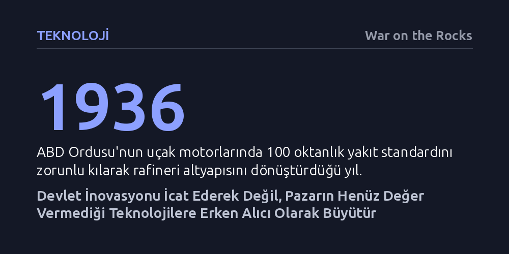

TEKNOLOJI · War on the Rocks · 2026-10-09
Tarihsel veriler, devletin çığır açan teknolojilerdeki asıl etkisinin icat yapmaktan ziyade pazarın henüz değer vermediği alanlara erken alıcı ve standart belirleyici olarak taahhüt vermesinden kaynaklandığını gösteriyor. Bu kamu taahhüdü zayıfladığında ise kritik üretim kapasiteleri hızla küresel rakiplere veya özel sermayeye devrediliyor.
İnovasyonun yalnızca serbest piyasa dinamikleriyle değil, devletin ticari değer oluşmadan önce üstlendiği erken alıcılık ve standart koyuculuk rolüyle serpildiğini kanıtlar.

Amerika Birleşik Devletleri'nin kuruluşunun 250. yılı vesilesiyle yapılan değerlendirmeler, savunma odaklı teknolojik atılımların sivil ekonomi üzerindeki kalıcı izlerini tartışmaya açıyor. Savaş dönemlerinin getirdiği varoluşsal baskılar altında geliştirilen teknolojiler, çoğunlukla muharebe sahasıyla sınırlı kalmayıp sivil ekonomiye yayılarak toplumların teknolojiyle kurduğu ilişkiyi kökten dönüştürdü. 1812 Savaşı sonrasında tüfek kundaklarını seri üretmek amacıyla tasarlanan kopyalama tornasından modern radarlara yakalanmayan hayalet bombardıman uçaklarına kadar uzanan geniş tarihsel çizgi, bu yayılımın boyutlarını gösteriyor.
Bu tarihsel örneklerin ortaya koyduğu en temel gerçek ise inovasyon literatüründeki yerleşik bir yanılgıyı düzeltiyor: Devletin rolü sanıldığı gibi sadece laboratuvarda oturup yeni aygıtlar icat etmekten ibaret değil. İncelenen deneyimlerin ortak paydası, "devletin inovasyondaki rolü, bir mucit olmaktan ziyade bir alıcı ve standart belirleyici olmasında yatmaktadır" tespitinde birleşiyor. Piyasaların henüz kârlı görmediği ve yüksek belirsizlik nedeniyle girmekten kaçındığı alanlarda devlet ilk büyük müşteri olarak devreye girdiğinde, teknolojinin gelişim patikası kalıcı olarak değişiyor.
Devletin standart belirleyici gücünün en somut örneklerinden biri İkinci Dünya Savaşı öncesinde yaşandı. ABD Ordusu 1936 yılında aldığı stratejik bir kararla, tüm Hava Birlikleri motorlarının 100 oktanlık yakıtla çalışacak şekilde tasarlanmasını zorunlu kıldı. Bu net standart ve talep taahhüdü, petrol rafinerilerinin savaştan yıllar önce gerekli altyapıyı kurup ölçeklendirmesini sağladı; böylece savaş patlak verdiğinde hava üstünlüğünü besleyecek yakıt kapasitesi çoktan hazırdı.
Benzer bir kaldıraç etkisi mikroelektronik alanında da görüldü. Henüz sivil kullanım alanı bulunmayan ve maliyeti olağanüstü yüksek olan entegre devreler, ABD Hava Kuvvetleri'nin verdiği sözleşmeler sayesinde Texas Instruments tesislerinde üretilmeye devam edebildi. Özel sektörün henüz kâr göremediği bu kritik aşamada sağlanan kamu siparişleri teknolojiyi yaşattı ve maliyetlerin düşerek sivil sektöre yayılmasını mümkün kıldı. Günümüzde taktik teçhizatlarda kullanılan PALS dokuma standardının mülkiyetinin devlette kalması da benzer şekilde herhangi bir üreticinin bu standarda uygun ekipman yapabilmesini sağlayarak rekabetçi ve açık bir ekosistem yaratıyor.
Bu tarihsel tecrübeler, günümüz savunma tedarik tartışmalarında öne çıkan 'hız' ve 'hazır ticari çözümlere yaslanma' yaklaşımlarına yönelik ciddi bir uyarı niteliği taşıyor. Ticari piyasaların sunduğu hazır çözümleri hızla sisteme katmak kuşkusuz önemli; ancak devletin asıl dönüştürücü gücünün, pazarın henüz değer biçmediği alanlara erken ve ısrarlı taahhüt vermekten kaynaklandığı unutulmamalıdır. Askeri teknolojilerin sivil ekonomiye devasa getiriler sağlaması çoğu zaman öngörülemeyen biçimde ve ancak on yıllar sonra gerçekleşiyor.
Devletin erken alıcı ve standart koyucu rolünden çekilmesinin bedeli ise stratejik kabiliyetlerin kaybı oluyor. Kamu taahhüdü aşındığında, kritik üretim kapasiteleri hızla küresel rakiplere veya finansal piyasaların kısa vadeli kâr beklentilerine terk ediliyor. İleri düzey çip üretiminin neredeyse tamamen Tayvan'da yoğunlaşması veya DuPont'un kurşun geçirmez yeleklerin ham maddesi olan Kevlar birimini bir özel sermaye fonuna satması, uzun vadeli kamu himayesinin yokluğunda stratejik üstünlüğün nasıl eridiğini açıkça kanıtlıyor.